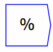

The percent operator takes one input, and multiplies its elements by 100. It is useful for converting fractions into percentages for display purposes.
The operator can be placed on the canvas in two ways: